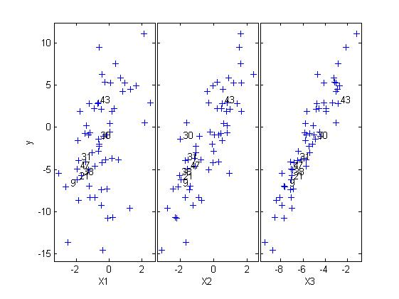

| Flexible Statistics Data Analysis Toolbox™ |
|
Plots y against each column of matrix X.
yXplot(out)
yXplot(out,param1,val1,param2,val2,...)
yXplot(y,X)
yXplot(y,X,param1,val1,param2,val2,...)
yXplot extends the MATLAB function gplotmatrix to the interactive and dynamic design of the FSDA toolbox. The input argument of yXplot can be the structure out returned by the forward search procedure or simply a vector y containing the response and a matrix X containing the explanatory variables. In case out is structure remember that it may be conveniently produced by function FSReda), yXplot uses the following fields of the input structure:
y − A vector with n elements that contains the response variable which has been used.
X − Data matrix of explanatory variables which has been used (it also contains the column of ones if input option intercept was missing or equal to 1).
RES − A matrix containing the residuals monitored in each step of the forward search. Every row is associated with a unit. The matrix is used when the databrush option is active, to generate a resfwdplot with trajectories highlighted for the residuals associated to the units selected in the yXplot.
yXplot(out) generates the plot with all default options, i.e. the plot of y against each column of matrix X is visualized with text labels for the units that in at least one step of the search had a scaled residual greater than 2.5 in absolute value. The default text label for a given unit is its row line number in matrices X and y.
yXplot(y,X) generates the plot with all default options, i.e. the plot of y against each column of matrix X is visualized with no text labels
yXplot(out,param1,val1,param2,val2,...) or yXplot(y,X,param1,val1,param2,val2,...) specify one or more of the name/value pairs described in the following table.
| Parameter | Value |
|---|---|
| 'nameX' |
cell array of strings of length p containing the labels of the variables of the regression dataset. If it is empty (default) the sequence X1, ..., Xp will be created automatically.. |
| 'namey' | character containing the label of the response. |
| 'ylim' |
Vector with two elements controlling minimum and maximum on the y axis. Default value is '' (automatic scale) |
| 'xlim' |
Vector with two elements controlling minimum and maximum on the x axis. Default value is '' (automatic scale) |
| 'tag' |
String which identifies the handle of the plot which is about to be created. The default is to use tag 'pl_yX'. Notice that if the program finds a plot which has a tag equal to the one specified by the user, then the output of the new plot overwrites the existing one in the same window else a new window is created. |
| 'selunit' |
Cell array of strings, string or numeric vector. If it is a cell array of strings, only the lines associated with the units that in at least one step of the search had a residual smaller than selunit{1} or greater than selline{2} will have a textbox. If it is a string it specifies the threshold above which labels have to be put. For example selunit='2.6' means that the text labels are written only for the units which have in at least one step of the search a value of the scaled residual greater than 2.6 in absolute value. If it is a numeric vector it contains the list of the units for which it is necessary to put the text labels. The default value of selunit is string '2.5'. |
| The options which follow can only be used if the input is a structure which contains information about the fwd search (i.e. the two fields RES and Un) | |
| 'datatooltip' |
Empty value or structure. The default is datatooltip=''. If datatooltip is not empty the user can use the mouse in order to have information about the unit selected, the step in which the unit enters the search and the associated label. If datatooltip is a structure, it is possible to control the aspect of the data cursor. See function datacursormode for more details. The default options of the structure are DisplayStyle='Window' and SnapToDataVertex='on'. |
| 'label' | Cell containing the labels of the units (optional argument used when datatooltip=1. If this field is not present labels row1, ..., rown will be automatically created and included in the pop up datatooltip window) |
| 'databrush' |
The core of this option is selectdataFS, a function used by all graphic tools of the FSDA toolbox. A separate common page details all databrush options. |
| The options which follow work in connection with previous option databrush and produce their effect on the monitoring residuals plot | |
| 'subsize' |
Numeric vector containing the subset size with length equal to the number of columns of the residuals matrix RES. If it is not specified, it will be set equal to the vector (n-nsteps+1):n being [n,nsteps]=size(RES). |
| 'selstep' |
Numeric vector which specifies for which steps of the forward search labels are required. The default is to write the labels at the initial and final step. The default is selstep=[m0 n] where m0 and n are respectively the first and final step of the search. |
n=100;
p=3;
X=randn(n,p);
y=randn(n,1);
% Run FS with exploratory data analysis purposes
[out]=LXS(y,X,'nsamp',1000);
[out]=FSReda(y,X,out.bs);
% Example of the use of function yXplot with all the default options
yXplot(out);
%get the handle of the yXplot figure
hfig = findobj('-depth',1,'Tag','pl_yX');
% the children of the yXplot
hChildren = get(hfig,'Children');
nhChildren = numel(hChildren);
% AX: the handle(s) of the yXplot axes
AX = hChildren; AX([1 nhChildren])=[];
nAX = numel(AX);
% H: the handles to the points in the subplots of yXplot.
% Note that the points are MATLAB line objects.
% Vector H is used to extract the values of the yXplot data points.
H = NaN(nAX,1);
hPlotMatrixAxC = get(AX,'Children');
Xi=[];
if nAX > 1
for i=1:nAX
H(i) = hPlotMatrixAxC{i,1}(size(hPlotMatrixAxC{1,1},1));
if i==1
y = get(H(i),'YData');
end
Xi = [Xi get(H(i),'XData')];
end
elseif nAX==1
y = get(hPlotMatrixAxC(numel(hPlotMatrixAxC)),'YData');
Xi = get(hPlotMatrixAxC(numel(hPlotMatrixAxC)),'XData');
else
disp('Error: nAX cannot be negative or zero.');
end
% BigAx: the handle to big (invisible) axes framing the entire plot matrix.
BigAx = hChildren(nhChildren);
% The handle of the yXplot legend, if present.
hLegend = hChildren(1);
This example shows what is obtained by running yXplot(out) with all standard options.
% load the multiple regression dataset % and extract the dependent and independent variables load multiple_regression y = multiple_regression.data(:,4); X = multiple_regression.data(:,1:3); % choose an initial subset and run the FS [out]=LXS(y,X,'nsamp',1000); [out]=FSReda(y,X,out.bs); % now the yXplot with all standard options yXplot(out);The figure produced by yXplot shows the units with 'large' absolute residuals

The labeled units can be easily extracted from the out structure returned by the FS:[n,nsteps] = size(out.RES); seq = (1:n)'; selmax = max(out.RES,[],2); selmin = min(out.RES,[],2); units = seq(selmax>2.5 | selmin<-2.5);
>> units
units =
9
21
30
31
38
43
47
The page Brushing the yXplot describes
a more complex use of yXplot(out,param1,val1,param2,val2,...).
|
|
waitforbuttonpressfs.html | zscoresfs.html |
|